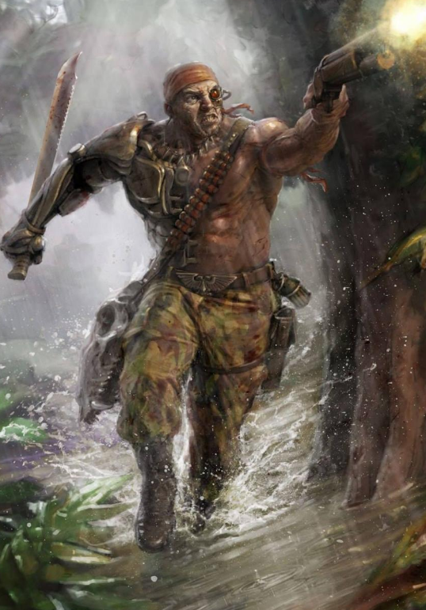

Dossier Régimentaire Catachan 502.M41
Les Catachans ne viennent pas d’un monde hostile. Ils viennent d’un monde qui veut les tuer.
Catachan est une jungle mortelle, saturée de prédateurs, de plantes carnivores, de poisons et de maladies. Là-bas, survivre jusqu’à l’âge adulte est déjà une sélection.

RÔLE SUR LE CHAMP DE BATAILLE
Les régiments issus de ce monde sont brutaux, autonomes et difficiles à contrôler. Ils méprisent les officiers faibles, les doctrines trop rigides et les ordres qui ignorent le terrain.
Leur spécialité est la guerre de jungle. Embuscades. Pièges. Infiltration. Combat rapproché.
Là où d’autres régiments avancent en ligne, les Catachans disparaissent dans la végétation. Puis l’ennemi commence à mourir sans voir qui le tue.
Leur force ne vient pas seulement de leurs muscles ou de leurs armes. Elle vient de leur instinct. Ils savent lire un terrain hostile comme d’autres lisent une carte.
DOGME ET DISCIPLINE
Sur un monde forestier, marécageux ou ruiné, ils deviennent une menace invisible. Chaque arbre peut cacher un soldat. Chaque silence peut annoncer une embuscade.
Leur discipline est particulière. Moins formelle que celle des Cadians. Moins suicidaire que celle de Krieg. Mais redoutablement efficace lorsque le commandement comprend leur nature.
Il faut comprendre ceci. Les Catachans ne combattent pas contre l’environnement.
Ils l’utilisent.
HÉRITAGE DE GUERRE
Et lorsqu’ils choisissent un terrain de chasse, l’ennemi n’entre pas dans une zone de guerre.
Il entre dans un piège vivant.
Fin de l’extrait. Toute unité catachane doit être déployée en environnement hostile, jungle, ruines denses ou théâtre d’embuscade.